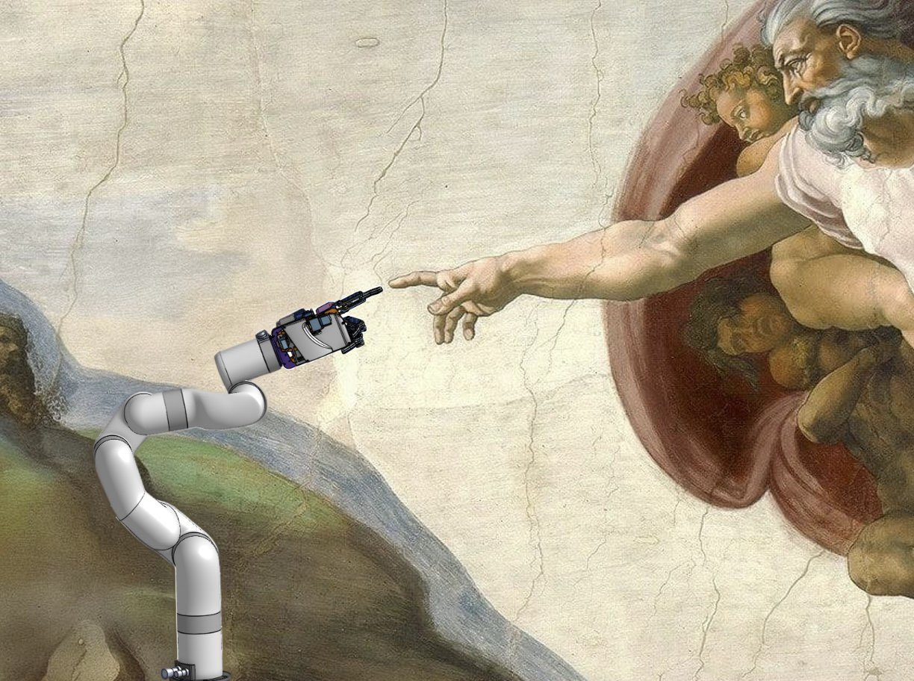

Ethan Cratchley
I’m a Computer Science & Business student specializing in AI working as a MLE. Interested in applying AI to industries like cybersecurity, robotics, and energy. Driven by curiosity and a desire to understand the world, I enjoy learning across disciplines and exploring how technology can shape the future. Outside of work, I play soccer, tennis, and golf, and spend my time hacking on robotics projects, studying history, and thinking about the future. 
Currently
Pursuing a Bachelor of Computer Science and Business Administration Joint Major with a Concentration in Artificial Intelligence at Simon Fraser University.
In the Fall, I be at the National University of Singapore (NUS) to study Computer Science and AI as well as travel around Asia, visiting Japan, China, Vietnam, South Korea, and more.
Working at Autnommi as a Machine Learning Engineer on LLMs and RAG systems, while contributing across backend development, CI/CD workflows, security, and deployment.
Studying, writing, and working on projects related to AI, Cyber Security, Robotics, and more.